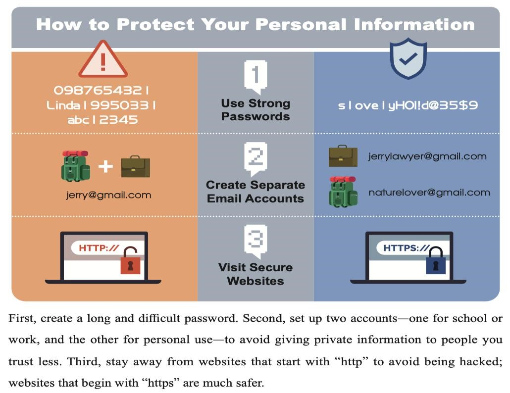
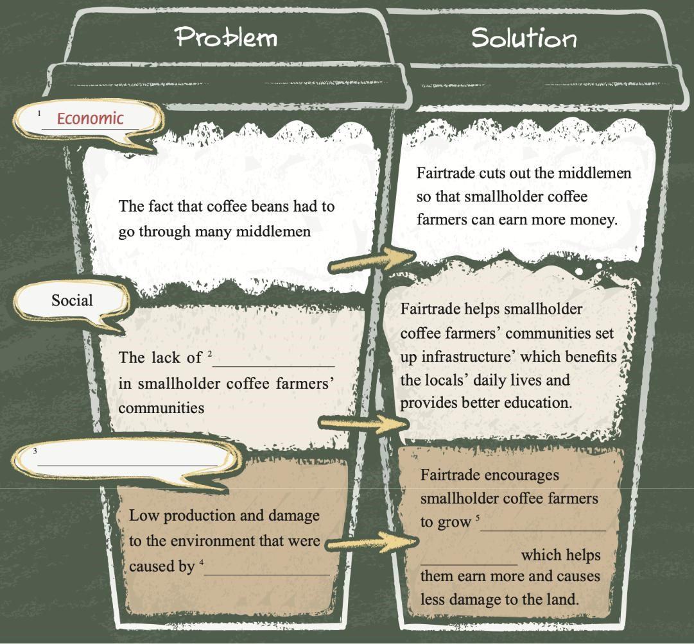

Starting high school is very exciting. However, a new environment can
be difficult for students. Luckily, many people in school can help students face the challenges. In this passage from a student guidebook, the school
counselor, Ms. Carter, lists two common worries for new students and shares a few useful tips.
The passage says hello to new students at Stillwater High School. It talks about how high school can be both exciting and hard. It talks about two things many students worry about: studying and getting along with others. The school counselors say it's okay to worry about these things and share tips to help.
Here are the two tips:
1. Doing things on time: This means being good at studying and getting ready for tests. They talk about a method called the Eisenhower Matrix that helps to figure out what's most important and urgent.
2. Talking well with others: They say it's important to talk and listen carefully to get along with people. It's not just about words; it's also about understanding facial expressions and how someone talks.
The passage ends by saying that every little thing you do in high school helps you grow. It tells students they can always ask the counselors for help whenever they need it.
I hope that the school also has a counselor that we can talk to every time we need something. Because sometimes talking to someone really eases our feelings and makes us feel lighter.
Thank you so much, everyone, for listening. I hope we can have a wonderful time in high school.
In this blog post, a Georgian blogger, Anton, introduces Taiwan to his readers and expresses his love for his second home. He writes about Taiwan's natural beauty, delicious foods, free society, and more.
Welcome to Taiwan, a small country with natural landscapes, yummy food, a free society, and an exceptional quality of life.
As someone who has spent seven incredible years here, He can attest to Taiwan's charm and why it's considered one of the top destinations globally.
Join me us, as we take you on a journey through the wonders and delights of this beautiful country.
Taiwan's natural beauty and delicious cuisine are its soul.
Despite its size, Taiwan offers landscapes like Taroko Gorge and beaches.
Enjoy sunsets and fresh seafood from fish markets, including iconic dishes like tuna and oyster omelets.
Taiwan's mature democracy and inclusivity are evident in its free society, where diverse perspectives are respected and honored, despite their differing political and social issues.
One of the reasons that makes Taiwan exceptional is its remarkable quality of life. The National Health Insurance Program ensures accessible, easy, and affordable healthcare for all. Visiting a doctor without worrying about long waits or hefty expenses is a remarkable aspect of life in Taiwan. It's no surprise that Taiwan's healthcare system is often ranked among the world's best.
We invite you to explore Taiwan and experience this remarkable country has to offer. Taiwan awaits with open arms, ready to capture your heart and leave you with cherished memories that last a lifetime.
Digital footprints are traces of data people leave online.
This passage talks about digital footprints and their effects—both the good and bad ones—on people's Internet browsing experiences. An understanding of digital footprints and their effects can help people better enjoy their Internet experiences.
A recent survey conducted in 2020 revealed that:
Internet users in Taiwan spend an average of nearly eight hours per day online. While this usage pattern isn't novel, what may surprise many is the revelation that every action and communication made by Internet users is stored as browser cookies, akin to leaving digital footprints.
Digital footprints enhance users' online experiences by streamlining their internet searches. Through the analysis of user behavior like browsing history, browser algorithms, and display content aligned with the user's interests.
This tailored approach optimizes user engagement, facilitating the discovery of advertisements or information related to their previous searches.
However, this personalized experience comes with a potential downside.
Digital footprints may create a "filter bubble" effect”. So, we must make sure to think before we post and think before we search.

Emma: Hey, guys! Did you know that Eid al-Fitr is coming up soon?
I heard there are events organized in town for it.
Ali: Yeah, Eid al-Fitr is a significant holiday for Muslims.
It marks the end of Ramadan, a month of fasting and spiritual reflection.
Sara: I've read about it!
Muslims celebrate with prayers, feasts, and exchanging gifts, right?
Raj: That's correct, Sara! It's a time for families and friends to come together, share delicious meals, and express gratitude for the blessings received during Ramadan.
Sophia: I saw posters around campus about Eid al-Fitr events. It seems like there's a growing interest in celebrating and understanding Islamic culture here in Taiwan.
Ali: Absolutely! More and more events are being organized, giving everyone a chance to learn about our traditions and customs.
Emma: That's fantastic! I think it's important for people from different backgrounds to understand and appreciate each other's cultures.
Raj: Definitely, Emma. Eid al-Fitr has become a bridge for both Muslims and non-Muslims to come together, share love, and appreciate the diversity around us.
Sara: I love how festivals like Eid al-Fitr bring people together, fostering unity and understanding among communities.
Sophia: It's heartwarming to see the inclusivity and respect for different cultures. I'm excited to attend one of these events and learn more about Eid al-Fitr.
Ali: You should! Experiencing these celebrations firsthand helps in understanding the essence of this holiday and its significance for Muslims.
Emma: I agree! I'll join in on one of the events. Thanks for sharing about Eid al-Fitr, guys!
Raj: No problem, Emma. It's always great to have open discussions about different cultures. Eid Mubarak to all of you!
All: Eid Mubarak!
Anchor 1: Good evening, everyone! We have a crucial update in medical research.
The significance of diversity in clinical trials for new treatments has taken the spotlight.
Anchor 2: That's right! Clinical trials are vital in developing new medical treatments, but there's a key issue: not all trials include a diverse range of participants.
Anchor 1: This lack of diversity can have serious implications. However, recent findings suggest that including diverse samples in these trials could greatly enhance the safety and effectiveness of new drugs.
Student 1: Why does diversity matter in clinical trials?
Anchor 1: Excellent question! Diversity is crucial because it ensures that the effects of a new treatment are understood across various populations, considering differences in genetics, lifestyles, and more.
Student 2: How does diversity in trials impact the safety and effectiveness of new treatments?
Anchor 2: Well, recent evidence provides compelling support for this. In one study, a medication tested on only a specific group later showed unexpected reactions in another, emphasizing the importance of diverse trials to uncover potential side effects.
Student 3: Are there other examples illustrating the importance of diversity in clinical trials?
Anchor 1: Absolutely! Another study focused on cancer treatment found that different ethnicities responded differently to a drug, showcasing the need for diverse samples to tailor treatments effectively for all populations.
Anchor 2: The bottom line here is that diversity in clinical trials is critical. It not only ensures the safety of new treatments but also makes them more effective across diverse populations.
Anchor 1: Stay informed, folks! This is a pivotal moment in medical research highlighting the importance of diversity in shaping safer and more effective treatments for all.
End of News Flash Segment.
Katherine Johnson, a woman of numbers, driven by the stars and the boundless possibilities they hold. From a young age, she found solace and fascination in the world of mathematics. But my journey was not one of smooth trajectories; it was a path with a lot of challenges.
As an African-American woman in the field of math and science, the odds were stacked against her. Yet, she refused to let societal barriers confine my ambitions. I believed in the power of my mind and the potential it held to transcend limitations.
When she joined NASA, she embarked on a mission that extended far beyond the confines of Earth. Her calculations and insights became the cornerstone of space programs, guiding astronauts through the space.
But the challenges were not merely mathematical. She faced many challenges. Doors were often closed, opportunities scarce. Yet, she persevered, pushing the boundaries not only of mathematical understanding but also of societal norms.
Her determination to excel knew no bounds. She wasn't just crunching numbers; She was breaking barriers and paving the way for future generations.
I believed that dreams were not confined by race or gender.
Her story was a testament to dream big and reach your goals.
Her legacy continues and inspire us to whatever we want in life and pursue our dreams. If you want to become a doctor, teacher, engineer or whatever you want. You can do this! Aim for the stars.
1. Renewable Energy Source:
Solar panels store the sun's abundant and renewable energy, providing a sustainable source of power. By utilizing solar energy, our community can reduce it’s reliance on fossil fuels, contributing positively to environmental conservation.
2. Energy Independence:
Installing rooftop solar panels grants us greater energy independence. By generating our electricity, we become less reliant on external energy sources, mitigating the impact of potential energy price fluctuations and disruptions.
3. Substantial Savings:
Embracing solar energy leads to significant savings on electricity bills.
Once installed, solar panels continue to generate clean energy for decades, offering considerable long-term cost savings for residents by reducing their monthly utility expenses.
4. Low Maintenance:
Solar panels require minimal maintenance.
These systems are durable, have few moving parts, and are designed to withstand various weather conditions. It is cleaned by rain, resulting in hassle-free ownership.
5. Environmental Impact:
Opting for solar panels contributes to a cleaner environment by reducing carbon emissions. By utilizing solar energy, our community can significantly decrease its carbon footprint, contributing to cleaner air and a healthier environment for current and future generations.
By highlighting these advantages, we can collectively make a substantial positive impact on our community's energy consumption, cost savings, and environmental footprint through the installation of rooftop solar panels.
Coffee is one of those drinks that many people can’t live without. In fact, around 1.6 billion cups of coffee are brewed each day.
Many smallholder coffee farmers suffer from poor living and working conditions because of economic, social, and environmental challenges.
We will discuss the problem and the solution of coffee fairtrade.

We are going to discuss about the Step-by-step guide on how to write an apology:
1. Give a Direct Apology:
Start your apology letter and offer a sincere apology for your actions.
For example, "I apologize for pressuring you into writing my college application essay.
I realize now that it was unfair and wrong."
2. Examine Things Through Other People’s Eyes:
Reflect on the situation from the other person's perspective.
For instance, "I started my essay late and felt immense pressure to meet the deadline, which led me to seek your help in an inappropriate way.
3. Take Full Responsibility:
Offer to take steps to make things right.
For instance, "I would like to meet you in person to apologize and express my regret for my behavior. Can we meet for coffee to discuss this further?"
4. Make Things Right:
Solar panels require minimal maintenance.
These systems are durable, have few moving parts, and are designed to withstand various weather conditions. It is cleaned by rain, resulting in hassle-free ownership.
5. Offer One’s Word Not to Repeat the Situation:
Promise not to repeat the same mistake and outline steps you will take to ensure it doesn't happen again.
For example, "I promise never to resort to emotional manipulation again. I am committed to learning and respecting boundaries in our relationship."